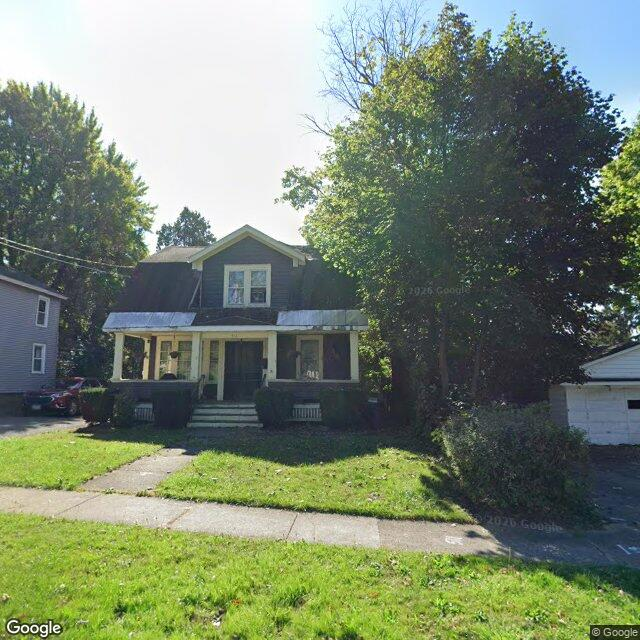

Property entry
511 Second North St
Published 2026-07-19T10:02:55+00:00
Parcel key: 003-14-100

Weathered porch roof fascia · mediumAI image read
A two-story residential building with a front porch and a grassy front yard, partially shaded by mature trees.
Property type guess: multifamily
Visible conditions
- The front porch roof shows signs of weathering and discoloration along the fascia.
- The main roof and siding appear intact but weathered.
- The yard is mostly clear with some patchy grass and mature trees.
Condition scores
- Porch Or Entry
- fair
- Roof
- fair
- Siding Or Facade
- fair
- Trash Debris
- none_visible
- Vegetation Overgrowth
- minor
- Windows Doors
- good
- Yard Or Lot
- good
Visible flags
- Active Construction Visible
- no
- Boarded Windows Or Doors
- no
- Fire Damage Visible
- no
- Structural Damage Visible
- no
- Vacancy Signs Visible
- no
Possible image-only flags
- Weathering and discoloration on the porch roof fascia.
AI review boxes
- Weathered porch roof fascia: Discoloration and wear visible along the edge of the porch roof.
Review reasons
- Possible image-only issue
Image quality
- Available
- True
- Bytes
- 97445
- Needs Rerun
- False
['The right side of the structure is partially obscured by a large mature tree.']
ACS tract context
Census Tract 2; Onondaga County; New York
- Housing units
- 1686
- Median gross rent
- 146700
- Median household income
- 51848
- Poverty rate
- 28.1
- Renter-occupied share
- 50.1
- Total population
- 3511
- Vacancy rate
- 14.7
OpenStreetMap nearby
60 meter search radius
Summary
- 19 mapped building footprints
- 1 named feature
- 1 land-use: cemetery
Notable mapped features
- First Ward Cemeteryway #108167221
Vacant properties 0
No matching records found in this feed.
Rental registry 6
- Latitude
- 43.07433578
- Longitude
- -76.15936988
- NeedsRR
- Yes
- ObjectId
- 911
- PropertyAddress
- 718 Lemoyne Ave
- RR_app_received
- 1772064000000
- Latitude
- 43.074412
- Longitude
- -76.15931517
- NeedsRR
- Yes
- ObjectId
- 914
- PropertyAddress
- 722-24 Lemoyne Ave
- RR_app_received
- 1695686400000
- Latitude
- 43.07448981
- Longitude
- -76.15925707
- NeedsRR
- Yes
- ObjectId
- 917
- PropertyAddress
- 726 Lemoyne Ave
- RR_app_received
- 1779321600000
- Latitude
- 43.07465025
- Longitude
- -76.15913727
- NeedsRR
- Yes
- ObjectId
- 920
- PropertyAddress
- 734 Lemoyne Ave
- RR_app_received
- 1748390400000
Code violations 0
No matching records found in this feed.
Unfit properties 0
No matching records found in this feed.